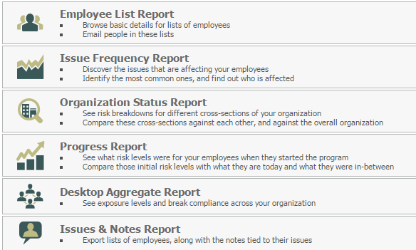
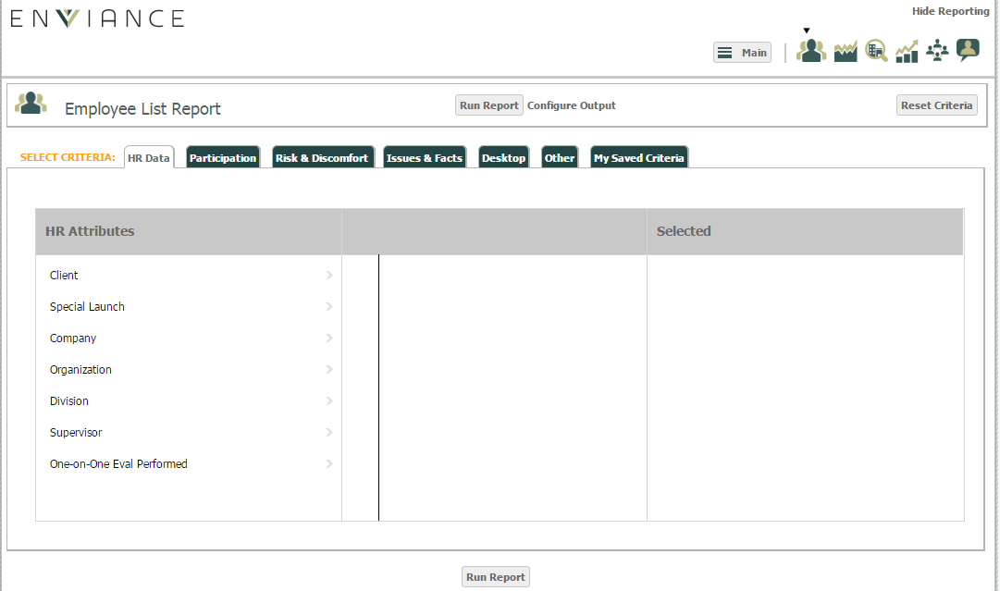
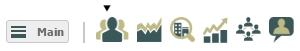
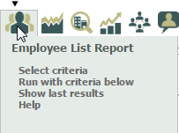

OES Reports provide insight into the overall ergonomic progress in your organization and help you focus on problem areas and individuals requiring particular attention. Reports can be configured to include specific groups of users filtered to match selected ergonomic profiles based on the data collected in the OES, combined with desktop data generated from RSIGuard, if installed.
The basis of all OES reports is the Employee List Report, since the users in your organization who participate in the OES program are the source of the ergonomic data stored. Filtering criteria for users can be set up and saved for future use in My Saved Criteria. Once you select the criteria for an Employee List Report on the Run Report page, that filter can be used to run any other type of report without having to re-select criteria. You can store multiple sets of report criteria to use for different groups or reporting purposes.
To run a report:
From the Administration page, select the Reporting tab.
The Reports list will appear in a separate browser window. The available reports are listed.

Select a report to display the report configuration page.

The different report types are displayed as clickable icons in the top right of the page.

The Main button returns you to the report selection page.
Select another report type to run by clicking the report icon.
Hovering over a Report button also gives you some quick options.

Select criteria: With this option you can edit the report criteria currently used. See Report Criteria for more details on selecting criteria.
Run with criteria below: Once you have run one report, you can run another report directly with the same criteria by hovering over the report button and selecting this option.
Show last results: Select this option to view the previous report with the same criteria.
You can print a report or output it to a web page or Excel, depending on the report type.